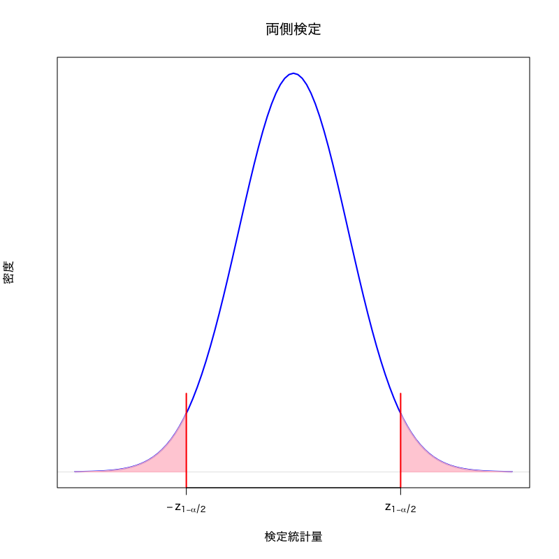

検定のまとめ
確率・統計 講義14
(Press ? for help, n and p for next and previous slide)
復習
統計的仮説検定
- ある現象・母集団に対して仮定された仮説の真偽を データに基づいて統計的に検証する方法
- 推定と大きく異なるのは， 母集団の分布に対して何らかの仮説を考えるところ
検定における仮説
帰無仮説 \(H_0\)
検定統計量の分布を予想するために立てる仮説
対立仮説 \(H_1\)
“帰無仮説が誤っているときに起こりうるシナリオ”として想定する仮説
検定の基本的手続き
- 仮説を立てる
- 仮説のもとで検定統計量が従う帰無分布を調べる
- 実際のデータから検定統計量の値を計算する
- 計算された検定統計量の値が 仮説が正しいときに十分高い確率で 得られるかどうかを判断する
検定の用語
- 仮説の判定
- 帰無仮説を棄却: 帰無仮説は誤っていると判断すること
- 帰無仮説を受容: 帰無仮説を積極的に棄却できないこと
- 検定の誤り
- 第一種過誤: “正しい帰無仮説を棄却する” 誤り
- 第二種過誤: “誤った帰無仮説を受容する” 誤り
- 検定の設計
- サイズ: “第一種過誤が起きる確率” を小さく
- 検出力: “第二種過誤が起きない確率” を大きく
有意水準と \(p\) 値
有意水準
第一種過誤が起きる確率(サイズ)として許容する上限
\(p\) 値 (有意確率): (検定統計量 \(T\), 棄却域 \(R_{\alpha}\))
検定統計量の値が棄却域に含まれる有意水準の最小値
\begin{equation} \text{($p$ 値)} =\min\{\alpha\in(0,1)|\text{$T$ が$R_{\alpha}$に含まれる}\} \end{equation}有意水準と \(p\) 値の関係
\(p\) 値が有意水準未満のときに帰無仮説を棄却する
正規分布を用いた平均値の検定
問題
確率変数列の平均値が \(\mu\) と等しいか検定せよ．
\begin{equation} X_1,X_2,\dotsc,X_n \end{equation}検定問題
\begin{equation} X_i=\theta+\varepsilon_{i}, \quad i=1,\dotsc,n \qquad \varepsilon_{i}\sim\mathcal{N}(0,\sigma^2) \end{equation}を観測値の確率モデル (\(\sigma^2\) は既知) とするとき
\begin{equation} H_{0}: \theta=\mu \quad\text{vs}\quad H_{1}: \theta\not=\mu \end{equation}
検定統計量
\begin{equation} T=\frac{\sqrt{n}(\bar{X}-\mu)}{\sigma} \end{equation}は 帰無仮説が正しいとき標準正規分布に従う．
棄却域 (両側検定の場合)
\begin{equation} R_{\alpha} = \left(-\infty,-z_{1{-}\alpha/2}\right) \cup \left(z_{1{-}\alpha/2},\infty\right) \end{equation}
正規分布を用いた平均値の差の検定
問題
2つの確率変数列の平均値が等しいか検定せよ．
\begin{equation} X_1,X_2,\dotsc,X_n, \qquad Y_1,Y_2,\dotsc,Y_m \end{equation}検定問題
\begin{align} X_i&=\theta_{1}+\varepsilon_{1i}, \quad i=1,\dotsc,n \qquad \varepsilon_{1i}\sim\mathcal{N}(0,\sigma^2)\\ Y_j&=\theta_{2}+\varepsilon_{2j}, \quad j=1,\dotsc,m \qquad \varepsilon_{2j}\sim\mathcal{N}(0,\sigma^2) \end{align}を観測値の確率モデル (\(\sigma^2\) は既知) とするとき
\begin{equation} H_{0}: \theta_{1}=\theta_{2} \quad\text{vs}\quad H_{1}: \theta_{1}\not=\theta_{2} \end{equation}
検定統計量
\begin{equation} T=\sqrt{\frac{nm}{n+m}}\frac{\bar{X}-\bar{Y}}{\sigma} \end{equation}は仮説が正しいとき標準正規分布に従う．
棄却域 (両側検定の場合)
\begin{equation} R_{\alpha} = \left(-\infty,-z_{1{-}\alpha/2}\right) \cup \left(z_{1{-}\alpha/2},\infty\right) \end{equation}
両側検定と片側検定
- 対立仮説によって棄却域の形は変わりうる
- 例: 2つの薬の治験結果に対する仮説:
- 古い薬(高価)と新しい薬(安価)の効能が変わらない
- 古い薬に比べて新しい薬の効能が改善した
- 例: 2つの薬の治験結果に対する仮説:
- 右片側検定: 棄却域がある定数 \(a\) によって \((a,\infty)\)
- 左片側検定: 棄却域がある定数 \(a\) によって \((-\infty,a)\)
- 右片側検定と左片側検定を合わせて片側検定と呼ぶ
- 両側検定: 棄却域がある定数 \(a < b\) によって \((-\infty,a)\cup(b,\infty)\)


推定量の漸近正規性
漸近正規性 (データ数が多いときの性質)
多くの推定量 \(\hat{\theta}\) の分布は正規分布で近似できる
- モーメントに基づく記述統計量は漸近正規性をもつ
- 最尤推定量は広い範囲の確率分布に対して漸近正規性をもつ
- いずれも中心極限定理にもとづく
- 信頼区間と同様に正規分布を用いて検定を考えることができる
最尤推定量の漸近正規性
定理
\(f(x)>0\) が連続で2階微分可能ならば \(\sqrt{n}(\hat\theta^*-\theta_0)\) は \(n\to\infty\) で正規分布 \(\mathcal{N}(0,I(\theta_0)^{-1})\) に近づく．
- 観測データが十分多ければ， 最尤推定量の誤差(分散)は Cramer-Rao 下界に一致する
Fisher 情報量 (\(f\) は確率質量関数または確率密度関数)
\begin{align} I(\theta_0) &=\mathbb{E}_{\theta_0} \left[ -\frac{\partial^2}{\partial\theta^2}\log f(X,\theta_0) \right] \\ &=\mathbb{E}_{\theta_0}\left[\left( \frac{\partial}{\partial\theta}\log f(X,\theta_0)\right)^2\right] \end{align}
最尤推定量の検定
問題
\(\theta_0\) を既知の定数として， 母数 \(\theta\) が真の値 \(\theta_0\) であるか否かを検定する
\begin{equation} H_0:\theta=\theta_0\quad\text{vs}\quad H_1:\theta\neq\theta_0 \end{equation}- 上記は両側検定
- 片側検定も同様に考えることができる
\(Z\) 検定 (正規分布による検定)
検定統計量
\begin{equation} Z=\sqrt{nI(\theta_{0})}(\hat{\theta}-\theta_{0}) \end{equation}- 帰無分布は標準正規分布
\(z_{1{-}\alpha/2}\):
標準正規分布の \(1{-}\alpha/2\) 分位点
棄却域:
\begin{equation} R_{\alpha}= \left(-\infty,-z_{1{-}\alpha/2}\right) \cup\left(z_{1{-}\alpha/2},\infty\right) \end{equation}
課題の説明
注意
- 提出するのは解答用紙1枚のみ
- 形式はPDFまたは画像
- 提出物が可読でない場合は評価できない